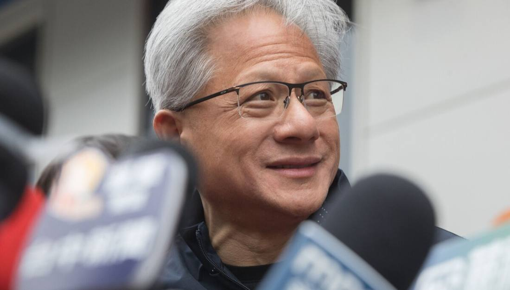
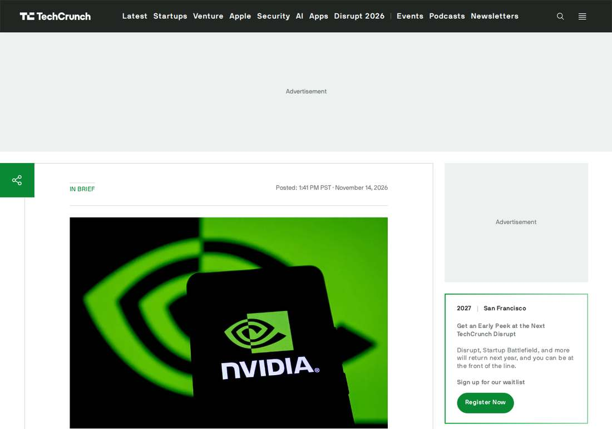

173,000 Sign 'Stand With Jensen' Petition as Musk Backs Huang's Return to Nvidia
The "Stand with Jensen" petition passed 173,000 signatures by November 16, 2026, four days after Jensen Huang resigned as Nvidia chief executive, with public backing from Elon Musk, Tim Sweeney, Garry Tan and Travis Kalanick. Signature counts are self-reported and unverified; the board has given no sign of reversing course, and Nvidia reports earnings on November 17.

- 01THE DEPARTURE — On November 12, 2026, Nvidia announced Jensen Huang had resigned as president, chief executive and board member, effective immediately, after 33 years leading the company he co-founded in 1993. The board had accepted his resignation on November 11; chief financial officer Colette Kress became interim chief executive.
- 02THE PETITION — On November 13, supporters launched the "Stand with Jensen" petition at standwithjensen.com, calling on the board to reinstate Huang while an independent investigation establishes the facts. TechCrunch reported on November 14 that it had passed 115,000 signatures.
- 03THE MOMENTUM — By November 16, The Register reported more than 173,000 signatures, including over 8,000 self-identified current Nvidia employees. Named supporters include Elon Musk, Tim Sweeney, Garry Tan, Amjad Masad and Travis Kalanick. The Financial Times reports Huang has discussed a possible comeback and an ally is assembling a "war room" of executives to lobby for his return.
WHAT HAPPENEDWhat Happened
An online petition calling on Nvidia's board to reinstate Jensen Huang passed 173,000 signatures by November 16, 2026, four days after Huang resigned as chief executive. The campaign, launched November 13 under the banner "Stand with Jensen," demands the board bring Huang back while an independent investigation establishes the facts, give him a chance to respond to the allegations, and publicly explain why he was forced out.
TechCrunch reported on November 14 that the petition had passed 115,000 signatures, with the site listing 5,965 current Nvidia employees, 1,108 former employees and 63,063 shareholders. By November 16, The Register reported more than 173,000 signatures, including over 8,000 people identifying themselves as current Nvidia employees, roughly a fifth of the company's workforce. Named supporters include Tesla and SpaceX chief Elon Musk, Epic Games chief Tim Sweeney, Y Combinator chief Garry Tan, Replit chief Amjad Masad and Uber co-founder Travis Kalanick.
Huang resigned on November 12, ending a 33-year run as chief executive of the company he co-founded in 1993, after reports of an affair with a former executive US intelligence suspects of spying for China and a separate alleged relationship with an Nvidia employee. Nvidia's board accepted his resignation on November 11, and chief financial officer Colette Kress is interim chief executive while the board searches for a permanent replacement. Nvidia reports fiscal third-quarter results on November 17, its first earnings since the departure.
WHY IT MATTERSA petition is not a board vote
The signature count is the headline, but the number is self-reported and unverified. The Register notes the site does not check names or employers, and the list has included entries that appear fake or duplicated. The petition's own organizers say they may hold new signatures for review before counting them. Treat 173,000 as a measure of public sentiment, not an audited tally of employees and shareholders.
What is verifiable is the caliber of the public backing. Musk, Sweeney, Tan, Masad and Kalanick have all put their names to the campaign, and the Financial Times reports Huang has discussed a possible comeback with associates while an ally assembles a "war room" of Silicon Valley executives to lobby for his return, possibly seeking White House support. That is a pressure campaign with real names attached, not only a counter on a website.
WHAT TO WATCHThe board faces two opposite pressures
The counterweight is Washington. Treasury Secretary Scott Bessent said on November 16 that Nvidia needs a "dramatic shake-up" and should look outside the company for its next chief executive, while pressing for answers on whether Nvidia knowingly allowed advanced AI chips to reach China in breach of export restrictions. The board is caught between a public campaign to restore its founder and a cabinet secretary demanding an outsider.
The next hard data point is Nvidia's earnings on November 17, the first chance for investors to question Kress and the board about the leadership crisis in public. The board has given no sign of reversing course, and Huang faces investigations by Congress and US intelligence authorities. Watch the earnings call for any board statement on the petition, and watch whether the investigation timeline the petition demands ever gets published.
SIGNAL JUDGMENT — ANALYSISA pressure campaign, not a verdict
Tokenta Signal's judgment: the petition is a real signal of how much of Silicon Valley wants Huang back, and the named backers give it weight a bare signature count would not. But the count itself is self-reported and unverified, the board has not responded, and the Treasury Secretary is pulling the other way, demanding an outside successor. The petition changes the politics around the succession; it does not change who decides it. The earnings call on November 17 is the next place the board has to answer for the choice.
WHAT REMAINS UNCERTAINWhat Remains Uncertain
EVIDENCEEvidence

The Register reported on November 16, 2026 that the "Stand with Jensen" petition calling on Nvidia's board to reinstate Jensen Huang had passed 173,000 signatures, with more than 8,000 signatories identifying themselves as current Nvidia employees, and that supporters include Elon Musk, Tim Sweeney, Garry Tan and Travis Kalanick.
PRIMARY SOURCESPrimary Sources
- The Register: Elon Musk leads Silicon Valley's campaign to put Jensen Huang back in charge at Nvidia
https://www.theregister.com/systems/2026/11/16/elon-musk-leads-silicon-valleys-campaign-to-put-jensen-huang-back-in-charge-at-nvidia/5310050 - TechCrunch: Elon Musk, other tech execs sign petition calling on Nvidia to reinstate Jensen Huang
https://techcrunch.com/2026/11/14/elon-musk-other-tech-execs-sign-petition-calling-on-nvidia-to-reinstate-jensen-huang/ - Stand with Jensen: petition to reinstate Jensen Huang
https://standwithjensen.com
RELATEDRelated Intelligence
- Alpöge and Buckmaster Claim Unforced Navier-Stokes Blow-Up, Closing OpenAI's Forcing Loophole
- CrowdStrike in Talks to Buy Zscaler in a $265 Billion Cybersecurity Combination
- Anthropic Mathematician Says Claude Proved Riemann; Independent Checks Are Holding
- Four Senators Move to Force the AI Boom's Financing Into the Open